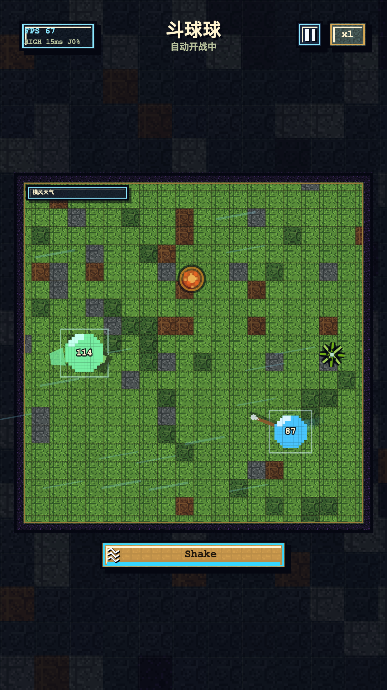

2026-06-25 · 斗球球增长方式判断
先验证循环，再找增量。
当前最值得测的不是“多投几个渠道”，而是哪一种 matchup / counter 承诺能带来会完成首局、愿意进入第二局、并且次日回来的用户。

当前读数
来源：本地运营闭环报告，GA 数据日期为 2026-06-23。样本仍小，只做方向和断点判断。
结论
目前优先增长方式是“低成本学习”，不是放量：把商店页、首页首屏、结果页和 Shorts 都统一到同一句承诺：选对阵、看结果、挑战反制。录屏素材优先用道具模式和英雄模式， 用更强的画面变化制造停留和反转。只有某个素材或来源同时改善开局、首局完成、二局启动和留存信号，才进入下一轮预算。
可能的增长方式
按优先级排序：先补数据和产品承接，再做渠道。
01
Google Play ASO：matchup 首图和短描述实验
当前缺 Play acquisition，先导出商店访问、安装、retained installers。首轮只测一个主资产： 第一张图和短描述主打 “Spear vs Shield: who wins?”。
目标：开局率 50%+
指标：visitors -> installers
指标：game_start
02
产品首屏：一键进入推荐 matchup
如果用户打开后不知道做什么，买量只会放大浪费。隐私同意后直接给可点的 matchup CTA：Pick a matchup / Start the duel，减少配置摩擦。
目标：game_start 50%+
看 start_source
首局完成不低于 55%
03
结果页：verdict -> Try the counter
当前二局和下一局点击都是 0，说明结果页没有把“反制下一局”变成主动作。把分享、战报等降级， 主按钮只服务 Try the counter。
目标：next click 20%+
目标：second battle 20%+
需要补二局完成
04
YouTube Shorts：道具模式 + 英雄模式录屏
YouTube 不是现在的主放量渠道，而是素材预筛器。录屏优先用道具模式做随机武器反转， 用英雄模式做角色辨识和克制冲突。每条 Short 带 UTM/creative_id，看 0-3 秒留存、完播、 评论争议点，再把赢家反哺 ASO 和广告。
道具模式 2 条候选
英雄模式 1 条候选
3 天复盘
05
留存机制：daily matchup / daily champion
next_day_return 只能当回访信号，不等于 D1。先做两个轻量回访理由，不做复杂养成： 每日对阵和每日冠军/连胜挑战。
指标：D1 cohort
指标：daily_match_complete
按 creative_id 拆
06
合规和数据口径：先修可读性
广告事件与“当前包无广告”口径冲突，first_battle_complete 与 game_end 不一致。 这些不是文档问题，会直接影响投放判断和商店披露。
P0：广告来源
P0：首局完成口径
P0：D1 cohort
72 小时实验板
每个实验只改一个主变量，避免小样本里看不出是谁起作用。
| 增长假设 | 第一动作 | 主指标 | 继续条件 | 停止条件 |
|---|---|---|---|---|
| matchup 问题比泛自动战斗更能促发开局 | 首图改为 Spear vs Shield: who wins? | store visitors -> installers；game_start / game_init_success | 开局率向 50% 靠近，首局完成不跌 | 开局仍低于 35%，商店转化下滑 |
| 结果页 counter 按钮能激活第二局 | 主按钮改为 Try the counter，补推荐理由 | next_match_recommend_click / game_end；second_battle_start / game_start | 两项都从 0 变为可读，目标 20%+ | 点击提升但次局完成低于 55% |
| 道具模式/英雄模式比普通职业模式更适合录屏获客 | A: 道具模式随机武器反转；B: 英雄模式克制/翻盘 | YouTube 0-3 秒留存；GA game_start by creative_id | 观看和游戏内承接同向改善 | 只涨观看，不涨开局或二局 |
| 每日对阵能成为回访理由 | daily matchup vs daily champion 两套素材和入口 | D1 cohort；daily_match_complete；next_day_return | 至少一个来源/素材角度 D1 明显更好 | D1/D7 都无信号，暂停加预算 |
执行节奏
先让数据闭环能判断，再把赢家推到小预算学习。
Day 0
补数据
导入 Play acquisition；核对广告事件；验证 first_battle_complete。
Day 1
改承诺
ASO 首图/短描述、首页 CTA、结果页 Try the counter 统一表达。
Day 2-3
发素材
优先录道具模式和英雄模式；所有链接带 UTM/creative_id；同步生成截图。
Day 4-7
复盘
看开局、首局完成、二局、D1；只保留上下游都改善的方向。
预算闸门
当前保持 Hold，预算服务于学习，不服务于规模。
数据不可读或承接断裂
Play acquisition 缺失、广告事件来源不清、二局持续为 0、first_battle_complete 口径不可信。
低成本学习
只跑 ASO、Shorts 和极小预算素材学习；每天看下游行为，不按 CTR 盲目加钱。
同一方向连续赢
game_start 50%+、首局完成 60%+、二局启动 20%+，D1 cohort 至少有一个来源有信号。
依据与可核对来源
官方来源用于实验方法和数据口径，行业 benchmark 只做参照，不做硬门槛。
Google Play Store Listing Experiments
支持用商店素材和文案做 A/B，用于设计首图、短描述、feature graphic 实验。
Play Console acquisition and retention reports
用于导出 acquisition、渠道、国家和 retained installers 视角，避免只看安装后 GA。
YouTube audience retention / key moments
用于判断 Shorts 前 3 秒、完播和关键时刻是否值得反哺 ASO 或广告素材。
GA Data API schema
用于确认 creative_id、start_source、recommendation_reason 等参数能否进入可查询口径。
GameAnalytics 2025 Mobile Gaming Benchmarks
只作为轻度游戏留存/变现外部参照；当前样本小，仍以自身 cohort 改善为准。
本地执行计划
记录当前指标、深度研究、增长调研方式和 Go / Hold / Stop 闸门。